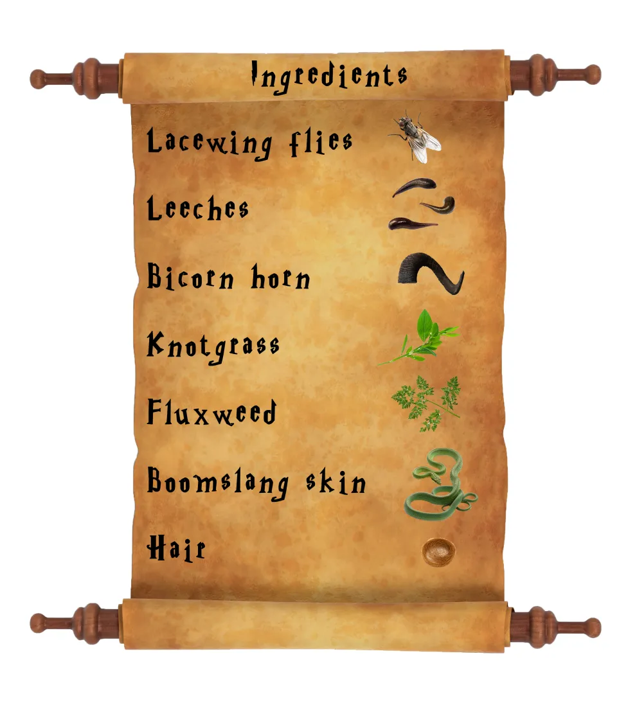
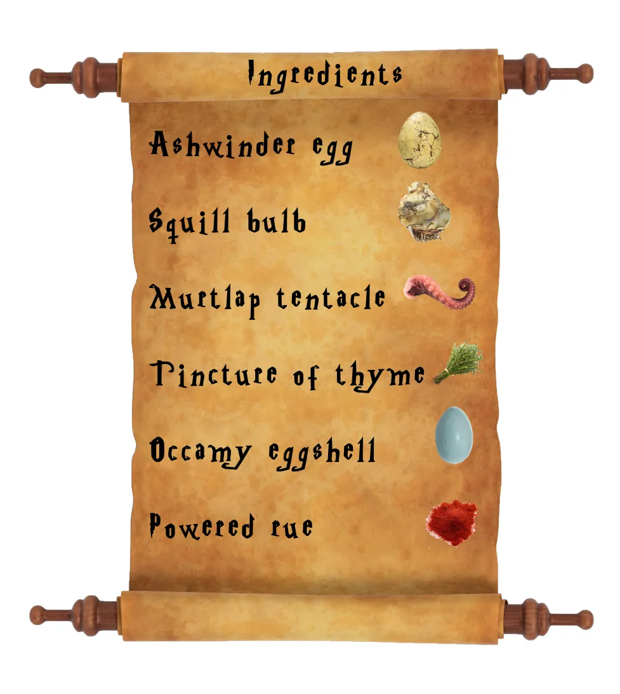
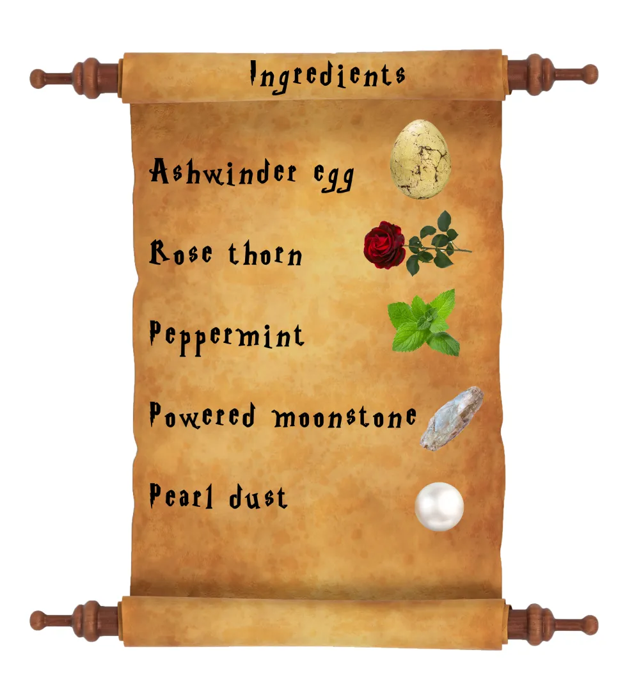

Elixir Details
Polyjuice Potion
Want to make yourself, er, not yourself? Well you need Polyjuice! Ingredients: Lacewing flies, Bicorn horn, Knotgrass, Fluxweed, Boomslang skin, and a piece of hair from the person you want to become.
Polyjuice Potion
Felix Felicis
If it's a dose of luck you're after, you've come to the right place. Ingredients: Ashwinder egg, Squill bulb, Murtlap tentacle, tincture of thyme, Occamy eggshell, and some powered rue.
Felix Felicis
Amortentia
If there's a special someone you've got your sights on, then this is the potion for you. Ingredients: Ashwinder egg, Rose thorn, Peppermint, Powered moonstone, Pearl dust.
Amortentia
Ageing Potion
There's loads of fun to be had if you can pretend you're a real life grown-up and this lovely liquid will help in that department. Ingredients: Red wine, Prune juice, Hairy fungus, Tortoise shell, Caterpillar, Bat tongue.